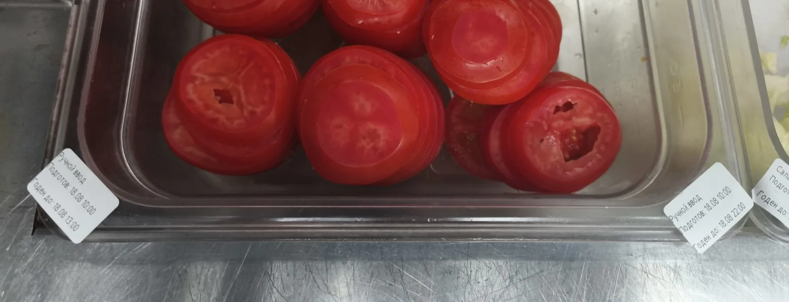
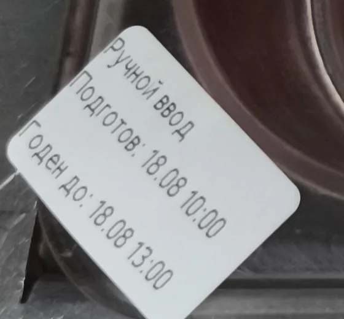
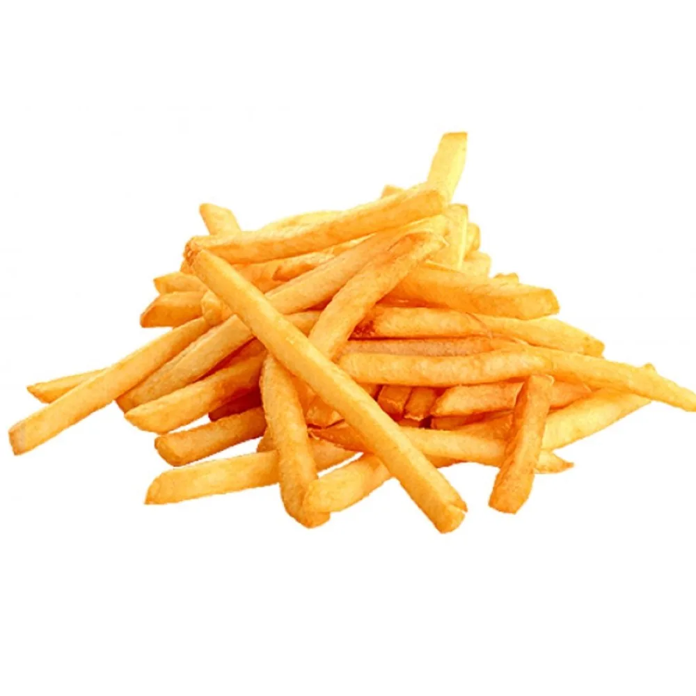

Как работает тренажёр
1. Сценарии
Ты проходишь реальные рабочие ситуации на Борту, Фасовке и Фритюре
2. Нарушение
В каждой ситуации нужно найти нарушение и выбрать правильное действие
3. Разбор
После каждого ответа ты получаешь обратную связь — почему ответ верный или неверный
Научиться контролировать качество и безопасность на этапе сборки и упаковки готовых продуктов.
Сроки хранения, памятка по упаковке, памятка по жаровне и памятка по диспенсеру для соли. Они доступны с любого экрана — кнопка «Материалы» в шапке.
Тебе потребуется примерно 25 минут, чтобы начать замечать нарушения на Борте, Фасовке и Фритюре. Всего 24 ситуации.
Готов начинать?
Памятки и сроки хранения
Открывай их в любой момент — тренажёр не сбросится, прогресс сохранится.
Как упаковывать закуски и сэндвичи · PDF
Памятка: жаровняРабота с жаровней и стандарты приготовления · PDF
Памятка: диспенсер для солиКак солить картофель фри по стандарту · PDF
Сроки хранения на производстве
Обновление от 05.08.2026. ТД — «товар до», окончание срока хранения. Полная таблица со всеми колонками — в исходном файле.
| Продукт | Срок хранения на производстве | Место маркировки |
|---|---|---|
| Замороженные продукты | ||
| Тортилья 9" | ТД = 24 часа | каждый пэн |
| Булочки (в ассортименте) | П/T/Д = 6ч./48ч. | каждый сливс |
| Лук красный маринованный | ТД = 4 часа (вкл. время выдержки 1 час) | каждый пэн (+решётка) |
| Хрустящий лук | ТД = 8 часов | каждый пэн |
| Бекон жареный | ТД = 4 часа (вкл. время выдержки 1 час) | каждый пэн |
| Соусы | ||
| Майонез 65% | ТД = 24 часа (вкл. время выдержки 1 час) | каждая туба |
| Кетчуп | ТД = 24 часа (вкл. время выдержки 1 час) | каждая туба/каждый сквизер |
| Горчица "Heinz" | ТД = 24 часа | каждая туба |
| Соус Цезарь "Heinz" | ТД = 24 часа (вкл. время выдержки 1 час) | каждая туба |
| Соус Томатный острый | ТД = 24 часа (вкл. время выдержки 1 час) | каждый сквизер |
| Топпинг "Клубника-Банан" (Промо) | ТД = 24 часа | каждая туба |
| Соус Бургер Оригинальный | ТД = 24 часа (вкл. время выдержки 1 час) | каждая туба |
| Соус Пармезан | ТД = 12 часов (вкл. время выдержки 1 час) | каждая туба |
| Соус Вкус Сезона_Беконез | ТД = 24 часа (вкл. время выдержки 1 час) | каждая туба |
| Соус Вкус Месяца_Чёрный Ниндзя | ТД = 24 часа (вкл. время выдержки 1 час) | каждый сквизер |
| Соус Гриль | ТД = 24 часа (вкл. время выдержки 1 час) | каждый сквизер |
| Соус 4 Сыра | ТД = 24 часа (вкл. время выдержки 1 час) | каждая туба |
| Соусы dip (в ассортименте) | ТД = 5 дней | каждый пэн |
| Сыр | ||
| Сыр Чеддер | ТД = 4 часа | каждый пэн |
| Сыр Пармезан | ТД = 4 часа | каждый пэн |
| Сыр "Микс трёх сыров" | ТД = 4 часа | каждый пэн+лёд (при необходимости) |
| Десерты и напитки | ||
| Драже m&m`s | ТД = 14 дней | каждый пэн |
| Клубничный топпинг | ТД = 7 дней | каждая ванночка для топпинга |
| Шоколадный/ Малиновый топпинг (NEW) | ТД = 30 дней (t +1_+27°C) | каждая бутылка |
| Сироп Пломбир для коктейлей | ТД = 14 дней | каждый сиропный танк |
| Топпинг "Клубника-Банан" (Промо) | ТД = 30 дней (t +1_+27°C) | каждая бутылка |
| Вафельный рожок | ТД = 5 дней - в пэне с крышкой; ТД = 24 часа в диспенсере шейк-машины | каждый пэн/диспенсер |
| Сиропы для кофе (в ассортименте) | ТД = 30 дней | открытая бутылка |
| Овощи и другое | ||
| Салат Aйсберг (все поставщики) | ТД = 3 часа (вкл. время выдержки 1 час) | каждый пэн |
| Лук свежий полукольца (все поставщики) | ТД = 3 часа (вкл. время выдержки 1 час) | каждый пэн |
| Томаты (мытые дез., все поставщики) | ТД = 12 часов | каждый пэн (+решётка) |
| Томаты нарезанные (все поставщики) | ТД = 3 часа | каждый пэн (+решётка) |
| Огурцы маринованные | ТД = 24 часа (без рассола) | каждый пэн (+решётка) |
| Молоко | ТД = 12 часов (срок мытья и дезинфекции контейнера) | контейнер с молоком |
| Кофе зёрна | ТД = 48 часов | контейнер кофемашины |
| Какао | ТД = 4 дня | контейнер с сухой смесью |
| Кег пива | ТД = 5 суток | каждый кег |
| Смесь для мороженого/шейков в ванне Шейк Машины | ТД = 14 дней | Каждая ванна шейк-машины |
| П = время начала разморозки | Обновление: | 05.08.2026 |
Ты начинаешь смену. Тебе нужно разобраться, чем должны заниматься сотрудники на станциях Борт и Фасовка. Распредели действия по блокам «Борт», «Фасовка» и «Другая станция».
Перетащи каждое действие в нужный блок.
Ты проверяешь станцию Борт перед началом смены. Нужно убедиться, что все продукты хранятся правильно. Выбери те продукты, которые могут храниться на станции Борт.
Верных вариантов несколько.
Ты идёшь в обход и замечаешь: на Борту стоит пен с нарезанными томатами. Сегодня 18.08, время — 13:02. Изучи таймер на фото. Что тебе нужно сделать?


На станции Борт лежат красные щипцы со значком «аллерген». Ты видишь, что сотрудник берёт ими готовую котлету гамбургер из PHU. Какое нарушение допущено?
Сотрудник подходит к тебе и говорит: на Борту рядом стоят две тубы с острым соусом. На одной маркировка «18.08, 08:00», на другой — «18.08, 12:00». Что с этим делать? Что ты ему скажешь?
Ты стоишь в зоне выдачи заказов и слышишь, что таймер хранения на фритюре начинает издавать звуковой сигнал: прошло 10 минут со времени приготовления картофеля. Что тебе нужно сделать?
Перед упаковкой картофеля фри сотрудник должен оценить его качество. Объясни сотруднику, какой картофель нельзя использовать. Выбери все верные варианты.
Верных вариантов несколько.

Ты наблюдаешь за сотрудником на Фасовке: он упаковал картофель фри, затем поставил наггетсы для следующего заказа, но у него остались несобранные заказы. Что ему нужно сделать дальше?
Сотрудник жарит картофель фри. Ты видишь, что на панели фритюра установлена температура 170 °C. Правильно ли настроена температура? Что ты должен сделать?
Ты видишь, что сотрудник начал использовать для приготовления продукт с красным мигающим индикатором. Что тебе нужно сделать?
Сотрудник жарит картофель фри. Он не встряхивает корзину в процессе жарки после звукового оповещения. Что тебе нужно сделать?
Ты видишь, что сотрудник обрабатывает поверхность борта дезинфицирующим средством. Он распыляет средство прямо на рабочую поверхность, затем протирает её полотенцем и сразу начинает готовить заказ. Правильно ли он делает? Что тебе нужно сделать?
Сотрудник солит картофель фри. Он держит диспенсер с солью на расстоянии 15 см от картофеля и при посоле встряхивает солонку. Правильно ли он делает? Что тебе нужно сделать?
Ты заметил, что сотрудник после пополнения продукции на фритюре продолжил ставить закуски, не помыв перед этим руки. Что тебе нужно сделать?
Ты проверяешь фритюр и видишь скопление панировочных крошек на поверхности масла. Что тебе нужно сделать?
Во время смены сотрудник случайно пролил масло на пол. Что тебе нужно сделать?
Ты видишь, что сотрудник перекладывает готовые наггетсы из корзины в пен PHU, и один наггетс падает на поверхность пригрильного морозильника. Что тебе нужно сделать?
Гость попросил приготовить «Картофель фри без соли». Сотрудник пожарил картофель и высыпал его на фасовку, где лежит солёный картофель. Что тебе нужно сделать?
Ты видишь беспорядок на станциях Борт и Фасовка. Сотрудники заняты заказами и не убираются. Что тебе нужно сделать?
Ты проверяешь температуру подогреваемого Борта плоским щупом, прибор показывает 40 °C. Соответствует ли это стандарту? Если нет, то что тебе нужно сделать?
Ты видишь, что сотрудник выкладывает нарезанный салат на Борт сразу после холодильника. Это нарушение? Если да, то что тебе нужно сделать?
Ты видишь, что сотрудник собирает Воппер в неправильном порядке. Почему это нарушение? Что тебе нужно сделать?
Ты проверяешь температуру готовых Крылышек Кинг в PHU. Температура продукта составляет 55 °C. Соответствует ли это стандарту? Если нет, что тебе нужно сделать?
Ты проводишь проверку станций Борт и Фасовка. Найди нарушения: отметь каждое фото, на котором видишь нарушение.
Нажми на фото, чтобы отметить его. Значок лупы открывает фото крупно.
Поздравляем!
Ты успешно прошёл тренажёр и научился контролировать качество и безопасность на этапе сборки и упаковки готовых продуктов.
Ситуации с ошибкой: —. Вернись к ним и перечитай разбор — кнопка «Назад» проведёт по всем экранам.
Кнопка передаёт в LMS статус «Пройден».